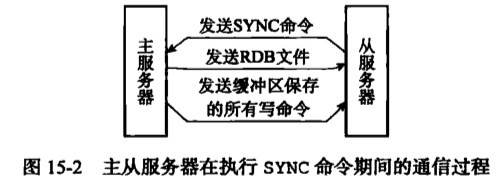
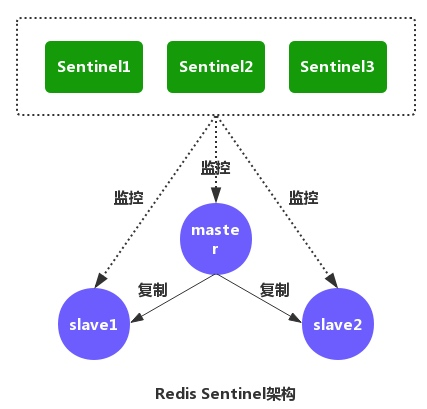
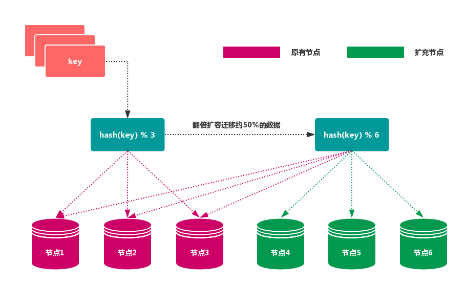
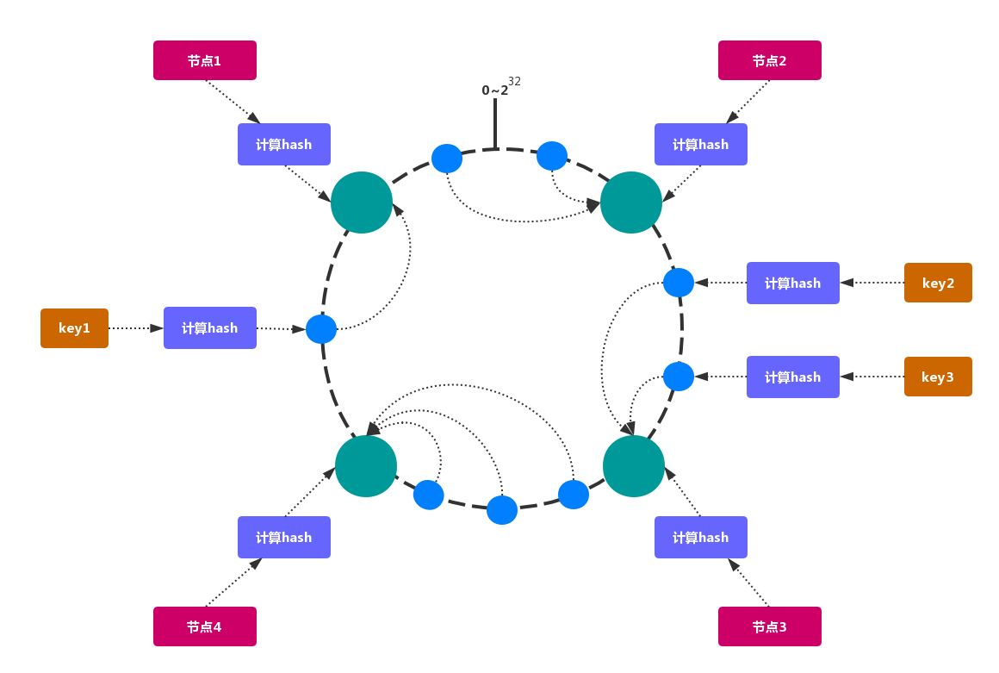
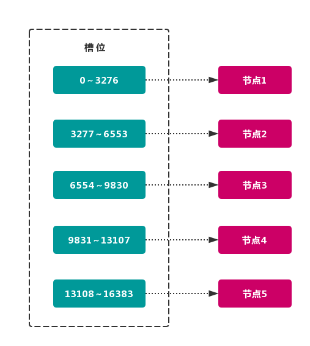

Redis 深入 - 高可用性
概述
在 Redis 中，实现高可用的技术主要包括以下四个方案：
- 持久化：持久化是最简单的方法。即数据备份，保证数据不会因进程退出而丢失。
- 复制：复制是高可用 Redis 的基础，哨兵和集群都是在复制基础上实现的。复制主要实现了数据的多机备份以及对于读操作的负载均衡和简单的故障恢复。
- 哨兵：在复制的基础上，哨兵实现了自动化的故障恢复。缺陷是写操作无法负载均衡，存储能力受到单机的限制。
- 集群：通过集群，Redis 解决了写操作无法负载均衡以及存储能力受到单机限制的问题，实现了较为完善的高可用方案。
主从复制
使用 slaveof 命令让一个服务器去复制另一个服务器。
那么被复制的称为主服务器(master)，复制的称为(slave)。
比如使用 SLAVEOF 127.0.0.1:6379
SYNC
redis 2.8 版本之前使用这个复制方案。
复制分为两个过程，同步(sync)和命令传播(commmand propagate)
- 同步用于将从服务器的状态更新至主服务器的状态。
- 命令通知用于主服务器状态改变时使得主从服务器状态一致。
SYNC 过程：
- 从服务器向主服务器发生 SYNC 命令。
- 主服务器收到 SYNC 命令，执行 BGSAVE 操作，后台生成 RDB 文件，并使用缓存区记录从现在开始执行的所有写命令。
- 主服务器的 BGSAVE 执行完毕，将生成的 RDB 文件发生给从服务器，从服务器载入文件。
- 主服务器发送缓冲区命令给从服务器，从服务器再次读取。

缺陷：
- SYNC 非常消耗资源
- 如果复制过程中发生了断线，主从服务器要重新执行一遍 SYNC
命令传播
即如果主服务器使用了使得数据状态不一致的命令要传播给从服务器使得主从状态一致。
命令传播时，从服务器默认会以每秒一次的频率向主服务器发送命令：
REPLCONF ACK <replication_offset>
主要有三个作用：
- 检测主从连接状态
- 如果响应时间过长，说明发生了故障
- 辅助实现
min-slaves功能- 这个功能用于现在主服务器在不安全的情况下执行写命令
- 比如从服务器数量过少或者从服务器的延迟过大
- 检测命令丢失
- 如果在检测过程中发生了 offer 不一致的情况，说明发生了命令丢失
PSYNC
PSYNC 主要改善了，复制过程中如果服务器断线导致的全量 SYNC 的巨大资源消耗。
包含了三个部分：
- 主从服务器的复制偏移量，主从服务器维护一个各自的偏移量
- 当发生不一致时，对比偏移量进行同步
- 主服务器的复制积压缓冲区(replication backlog)，主服务器维护的一个固定大小的队列
- 命令传播不仅会发送命令给从服务器，还会将命令写入积压缓冲区，便于 PSYNC 部分同步。
- 服务器的运行 ID
- 判断重连上的是不是同一个服务器，否则不能进行部分同步。
哨兵模式
概念
因为复制无法解决主服务器失效的问题，所以 Redis 使用了哨兵(Sentinel)模式来保证在主服务器失效的情况下可以使得某个从服务器升级为主服务器保证系统的可用性。
主要实现了：
- 监控
- Sentinel 会不断的检查主服务器和从服务器是否正常运行。
- 通知
- 当被监控的某个 Redis 服务器出现问题，Sentinel 通过 API 脚本向管理员或者其他的应用程序发送通知。
- 自动故障转移
- 当主节点不能正常工作时，Sentinel 会开始一次自动的故障转移操作，它会将与失效主节点是主从关系的其中一个 从节点 升级为新的主节点，并且将其他的从节点指向新的主节点。
- 配置提供者
- 在 Redis Sentinel 模式下，客户端应用在初始化时连接的是 Sentinel 节点集合，从中获取主节点的信息。

需要分清的一些概念：
| 基本名词 | 逻辑结构 | 物理结构 |
|---|---|---|
| Redis数据节点 | 主节点和从节点 | 主节点和从节点的进程 |
| 主节点(master) | Redis主数据库 | 一个独立的Redis进程 |
| 从节点(slave) | Redis从数据库 | 一个独立的Redis进程 |
| Sentinel节点 | 监控Redis数据节点 | 一个独立的Sentinel进程 |
| Sentinel节点集合 | 若干Sentinel节点的抽象组合 | 若干Sentinel节点进程 |
| Redis Sentinel | Redis高可用实现方案 | Sentinel节点集合和Redis数据节点进程 |
| 应用客户端 | 泛指一个或多个客户端 | 一个或者多个客户端进程或者线程 |
原理
Sentinel 节点连接一个 Redis 实例的时候，会创建 cmd 和 pub/sub 两个连接。Sentinel 通过 cmd 连接给 Redis 发送命令，通过 pub/sub 连接到 Redis 实例上的其他 Sentinel 实例。
Sentinel 与 Redis 节点交互的方式：
PING检查节点的状态INFO获取它的 从节点信息PUBLISHSentinel节点通过__sentinel__:hellochannel 发布自己的信息及主节点相关的配置SUBSCRIBESentinel节点通过__sentinel__:hellochannnel，获取正在监控相同服务的其他 Sentinel 节点
Sentinel 内部节点之间交互：
PING检查其他 Sentinel 节点的状态SENTINEL:is-master-down-by-addr和其他 Sentinel 协商主节点的状态，如果主节点处于 SDOWN 状态，则投票自动选出新的主节点
每个 Sentinel 节点的执行流程一般分为四个阶段：
- 心跳阶段：Sennel 向其他主服务器、从服务器及其他 Sentinel 实例发送心跳检测：
- Ping：每秒一次
- INFO：十秒一次，如果有主节点客观下线，频率会变为每秒一次，这是为了跟进主节点的配置更新
- 下线阶段：满足不同的条件节点会被 Sentinel 标记下线：
- 主观下线：
- 如果一个实例距离最后一次有效回复 PING 命令的时间超过 down-after-milliseconds 所指定的值
- 监视这个主服务器的所有 Sentinel 节点，要以每秒一次的频率确认主服务器的确进入了主观下线状态
- 客观下线：
- 有足够数量（配置文件指定）的 Sentinel 在指定的时间范围内同意这一判断
- 主观下线：
- 选举阶段：Sentinel 投票自动选出新的主节点。将剩余的从节点指向新的主节点并进行数据复制
- 恢复阶段：满足一定条件的节点的下线状态会被移除：
- 客观移除：当没有足够数量的 Sentinel 同意主服务器下线时
- 主观移除：当主服务器重新向 Sentinel 的 PING 命令返回有效回复时
集群方案
分区方案
根据在哪个位置决定数据在哪个 Redis 中存储，将分区方案分为三类：
- 客户端分区
- 思路：即在客户端通过 Hash 函数之间将 key 映射到某个 Redis 节点上。
- 优点：简单，不需要中间件
- 缺点：无法动态增删节点，客户端之间无连接。
- 实现：
Redis Sharding
- 代理分区
- 思路：使用一个代理组件将请求分发到正确的节点上。
- 优点：可以对客户端透明，转发存储可以分离。
- 缺点：多了一层代理层，架构比较复杂。
- 实现：
Twemproxy和Codis
- 查询路由
- 思路：客户端随机请求 Redis 实例，实例会将请求转发给正确的节点。
- 优点：无中心节点，容易动态增删，支持故障转移。
- 缺点：维护成本高。
- 实现：官方的
Redis Cluster
分区规则
我们一般需要将全量的数据通过某种分区规则分到不同的节点上。一般包含哈希分区和顺序分区两种。这里主要讲讲哈希分区的不同方式：
节点取余分区
使用哈希值节点数量 N 使用公式：hash（key）% N 计算出节点值进行映射：

简单，但是节点数量变化会导致 Rehash。
一致性哈希分区
将所有的节点排列在收尾相接 的 Hash 环上，每个 key 在计算 Hash 后会顺时针找到临接 的存储节点存放。
当节点发生变动时，仅影响该节点在 Hash 环上顺时针相邻的后续节点。

一致性哈希可以很好的解决稳定性问题，但是会造成哈希环中部分数据无法命中，不适合少量数据节点的分布式方案。
虚拟槽分区
使用哈希函数把所有数据映射到一个固定范围的整数集合即槽（slot）中，每个节点会负责一定数量的槽。

容易增删节点，只要移动 slot 即可。
Redis Cluster 的分区方案。
限制
因为多个键可能会分布在不同节点上，所以：
- 不支持多键操作
- 事务操作支持有限
- 不支持多数据库空间
- 只支持从节点复制主节点，不能嵌套
key 哈希标签
因为节点只处理自己拥有的key，对于不拥有的key将返回重定向错误，即-MOVED key 127.0.0.1:6381，客户端重新向这个新节点发送请求。
所以让一组相关的 key 映射到同一个节点上是非常有必要的，这样可以提高效率。
比如 {user1000}.following，{user1000}.followers
即仅用 {} 之间的字符参与哈希计算。
这样可以保证哈希值相同，落到相同的节点上。但是key又是不同的，不会互相覆盖。使用哈希标签把一组相关的key关联了起来。
配置
具体查看参考123。